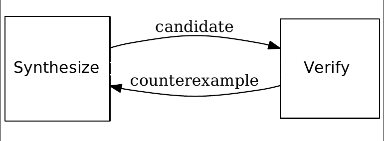

boolean variables
Satsifiability Modulo Theories
1 + x * 2
(x <= 10) && (y == 5)
x := x + 1
⋯ ; ⋯
while cond { ⋯ }
if cond { ⋯ } else { ⋯ }
data AExp = Var Name
| Lit Int
| AExp :+: AExp
| AExp :-: AExp
| AExp :*: AExp
| AExp :/: AExp
data BExp = True' | False' | ⋯
data Cmd = Skip
| Set Name AExp
| Seq Cmd Cmd
| If BExp Cmd Cmd
| While BExp Cmd
def foo(a, b) { <BODY> }
…
foo (1, 2);
stuff;
// fresh names
a := 1;
b := 2;
<BODY>
stuff;
while x < 5 { <BODY> }
if x < 5 {
<BODY>
if x < 5 {
… /* bound times */
} else {}
} else {}
x := 10;
a := 11;
x := x + a;
x₀ := 10;
a₀ := 11;
x₁ := x₀ + a₀;
if x < 5 {
x := x + 1;
} else {
x := x + 2;
}
if x < 5 {
x₁ := x₀ + 1;
} else {
x₂ := x₀ + 2;
}
x₃ := φ(x₁, x₂)
Interpreter
aexp :: (Scope Int) → AExp → Int
bexp :: (Scope Int) → BExp → Bool
cmd :: (Scope Int) → Cmd → Scope
Compiler
aexp :: (Scope AST) → AExp → Z3 AST
bexp :: (Scope AST) → BExp → Z3 AST
cmd :: (Scope AST) → Cmd → Z3 ()
5 + x
Lit n → n
Var x → lookup scope x
e₁ :+: e₂ → aexp scope e₁ +
aexp scope e₂
Lit n → Z3.mkBv 32 n
Var x → lookup x scope
e₁ :+: e₂ → do e₁ ← aexp scope e₁
e₂ ← aexp scope e₂
Z3.mkAdd e₁ e₂
x = 5 + x
Set name val →
let newVal = aexp scope val in
update name newVal scope
Set name val →
do newVal ← aexp scope val
newVar ← Z3.mkFreshBvVar name 32
eq ← Z3.mkEq newVar newVal
Z3.assert eq
return (update name newVar scope)
if x < 5 {
x := x + 1
} else {
x := x + 2
}
If cond c_1 c_2 →
do cond' ← bexp scope cond
scope' ← compile scope c_1
scope'' ← compile scope c_2
makePhis cond' scope scope' scope''
Z3.mkIte cond (lookup name scope₁)
(lookup name scope₂)
counterexample guided inductive synthesis 
while x <= ?? {
x += a * ??
}
refinement types
termination measure len
:: List a -> {Int | _v >= 0} where
Nil -> 0
Cons x xs -> 1 + len xs
replicate :: n: Nat -> x: a ->
{List a | len _v == n}
replicate = ??
Created by Tikhon Jelvis.